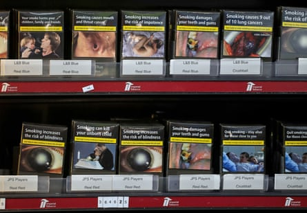

Aggressively marketed vapes threaten to undo progress made on smoking control, according to the World Health Organization .
Officials, speaking at the World Conference on Tobacco Control in Dublin, said efforts were stalling when it came to helping tobacco users to quit, campaigning in the media on the dangers, and imposing higher taxes on tobacco products. Young people were particularly vulnerable, it added.
Countries should consider extending the graphic health warnings already required on cigarette packets to vapes or e-cigarettes, heated tobacco products and nicotine pouches, the WHO said.
In many countries, tobacco products had become more affordable in the past decade, the report said, despite a WHO recommendation that cigarettes should be taxed at 75%. While cigarettes became less affordable in 46 countries, they became more affordable in 42 others, including 23 low or middle-income countries.
In 133 countries, vapes and similar devices are now regulated in some way – up from only eight in 2007. However, 62 countries apply no regulations at all. The extent of regulation varies, with almost 90% of wealthier countries either regulating or banning sales, compared with 66% of middle-income and only 27% of poor countries.
Cigarettes and tobacco for sale in a UK shop, showing the packaging with graphic warnings of smoking risks that the WHO wants extended to other nicotine products.Photograph: Alamy
In the UK, disposable vapes were banned this month in a bid to prevent young people using them and on environmental grounds.
Dr Tedros Adhanom Ghebreyesus, WHO director general, said: “Twenty years since the adoption of the WHO Framework Convention on Tobacco Control , we have many successes to celebrate, but the tobacco industry continues to evolve and so must we.”
The report highlights nicotine pouches and heated tobacco products , as well as vapes, as examples of new products. Dr Rüdiger Krech, the WHO’s director of health promotion, said they were “aggressively marketed in ways that undermine hard-won public health gains”.
He said national regulators could not be expected to deal with an onslaught of “thousands” of new products, which represented an attempt by tobacco companies to focus attention away from their “major business” of traditional tobacco.
He added, however, that it was “hugely important to regulate these new products, because they are attracting children and young people to actually use nicotine, and that’s with the addiction that it brings”, which he said would lead to tobacco use. Data is not available for all countries, but surveys suggest about 6% of children aged 13 to 15 use e-cigarettes.
The WHO report on the global tobacco epidemic focuses on six tobacco control measures and rates countries on how far they have implemented them.
These include taxation, introducing smoke-free air legislation, and offering smokers help to quit. Other measures include monitoring tobacco use and prevention policies, bans on tobacco advertising and sponsorship, and warning people about the dangers via pack labels and information campaigns.
Since 2007, 155 countries have implemented at least one of the six measures at “best-practice” level, the report found, with four countries – Brazil, Mauritius, the Netherlands and Turkey – implementing the full package.
However, 40 countries have no measure at best-practice level, and more than 30 countries still allow cigarettes to be sold with no mandatory health warning. It means billions of people remain unprotected from the ill effects of tobacco, which claims kills more than 7 million people a year , the report warned.
Alison Cox, director of policy and advocacy at the NCD [non-communicable disease] Alliance, said: “It’s clear that there is a long way to go if we are to reduce the many unnecessary tobacco related illnesses and premature deaths still occurring globally.
“Raising taxes is one of the most effective measures that offers governments a triple win of reducing tobacco consumption, saving lives and healthcare costs, while raising much-needed revenue.”